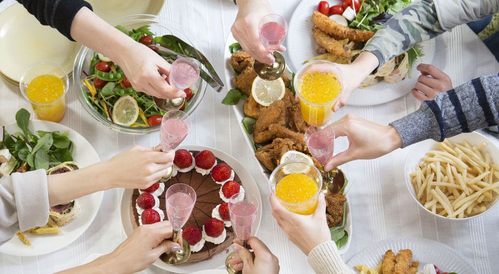

One for all, All for one
One for all, All for one
 One for all, All for one
One for all, All for one
採用の軸は「人柄採用」です
「周囲の人が何かを成し遂げる喜び ＞= 自分が何かを成し遂げる喜び」
自分自身が努力を積み重ね何かを成し遂げていくことは自分の自信につながり、 成長していく過程ではとても大切なことだと思います。しかし、人生にはこれ 以上の喜びがあることを私達は知っています。それは、チームや組織として何かを成し遂げたときの喜びです。 「For the team」という言葉のように、「みんなのために」、「チームのために」と熱く思いを重ね、 自分の持てるすべての才能や努力を投入して何か大きなことを成し遂げたときは大きな喜びを感じることができます。
英代は「One for all, All for one」という旗印をかかげ、誰かを蹴落とすのではなく誰かと手を取り合うための戦いをする「共生の社会」に向かっているチームです。考える軸がいつも「自分」ばかり、という人は仕事がとても苦しく、理不尽なものに思えるかもしれません。
私達は誰かの成長のために「儲け」を捨ててのぞむことがあります。社会貢献活動を実践するために、自分の積み上げてきたものすべてを提供することもあります。「手を取り合う戦い」とは、「自分のためだけという欲求との戦い」なのです。
2) 感謝する心をもち、感謝される行動がとれる人
3) 共に楽しみ、共に学び、共に成長していける人
4) 大切なものを変えない勇気と、改革する情熱をもつ人
5) 高い視座をもち、自分なりの志を育める人
このような志向性を持つ人が集まる会社（チーム）を作り、いい会社、いい社会を一緒に創っていきたいと思います。
目指して欲しいのは「素敵なスペシャリスト」です
私達はITを通してさまざまな業界の業務支援やシステム基盤の提供、システム開発、そしてアプリケーションの提供を行っています。英代はまだまだ社会に影響を与えるほどの力はありませんが、社員一人ひとりが心も体も充実した状態で今、目の前の業務に集中し、個々の能力を発揮して貢献しつづけることができれば、共に喜び発展する素敵な流れが創り出せると信じています。
PHPもRubyもJavaもC言語も何もわからない。でもエクセルの仕事ならショートカットを多用しつつ関数・マクロで効率的な作業ができる。こういう人たちもスペシャリストの卵です。英代を構成する社員の約7割は前職がIT業界ではありません。それでも、社内研修を経て自ら学習を重ね、今は眩しいくらいに輝いています。
人の成長が、会社の成長に繋がり、会社の成長が社会の成長につながります。私達はIT技術者である前に、まず、ひとりの人間です。社員一人ひとりには「自分も、周囲の人も幸せにする！」という想いを大切にした「素敵なIT技術者」、「素敵なスペシャリスト」になってもらいたいと思います。「失敗」は一人でもできますが、「成功」は一人ではできません。素敵な仲間たちと支え合い、清々しい達成感を味わい、いい会社、いい社会をつくっていきたいと思います。
お食事会について
私達は多くの社員を採用することが目的ではありません。社風に合った、つまり、英代という会社の風土で働くことを幸せに感じる、こういう人が私達を発見し、集ってくれるとよいと考えています。
応募していただく一人ひとりにしっかりと向き合い、一緒に未来を考え、共によき仲間として人生を送っていく。これこそが私達にとっても一番自然で、一番納得のいく採用活動だと考えています。
そのため、集団での「説明会」は実施せず、英代の想いをもっと知りたい人に「お食事会」の場を設けています。 また、仕事の事を知りたい人はアルバイト採用枠で募集してもらえれば、賃金を得ながら「人」も、「風土」も、「仕事」も知ることができます。私達の人や社風に興味をお持ちの方はぜひエントリーしてください。
